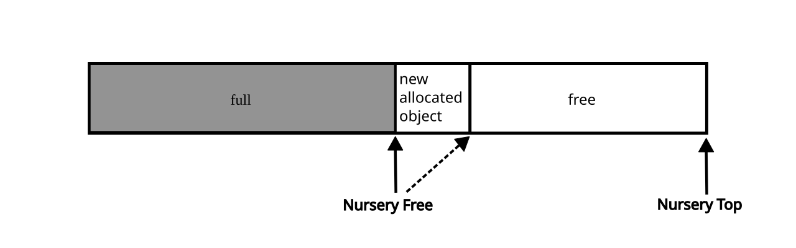
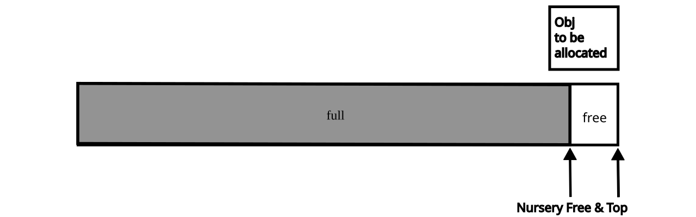
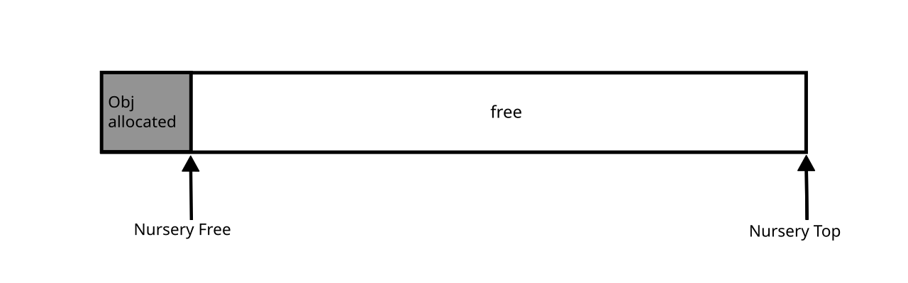
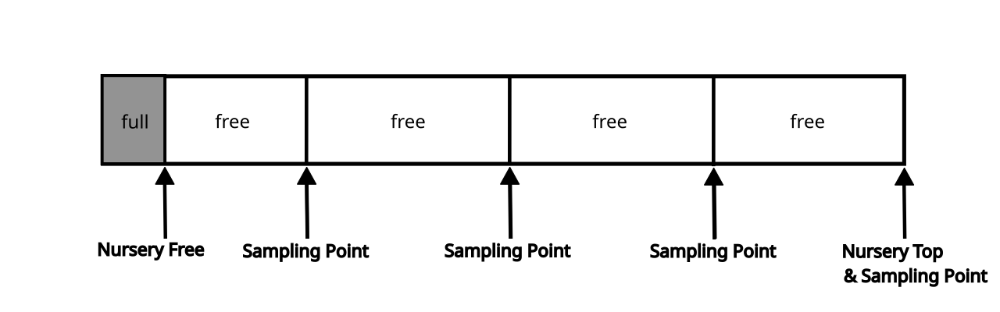
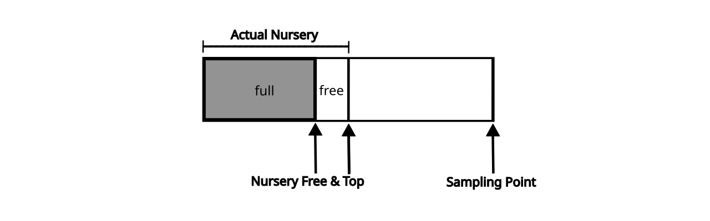
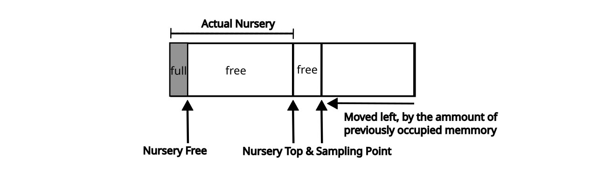
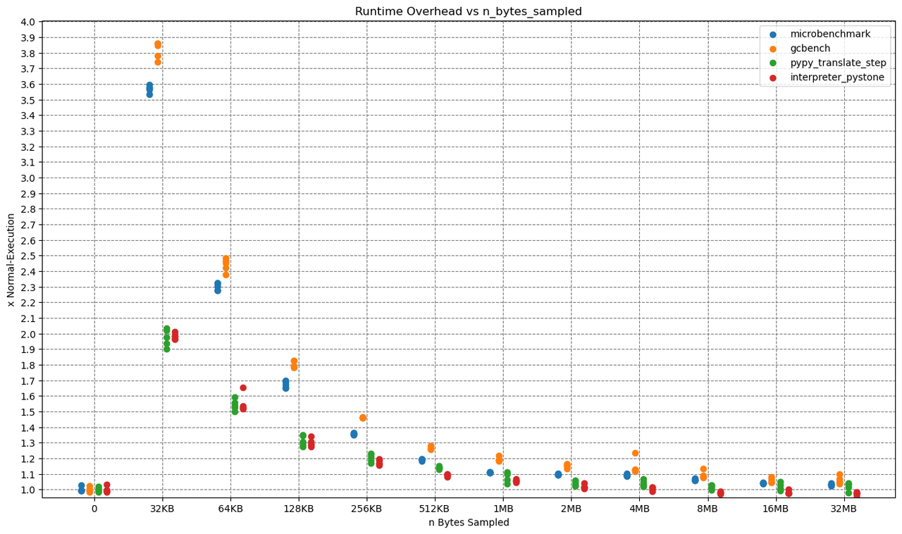
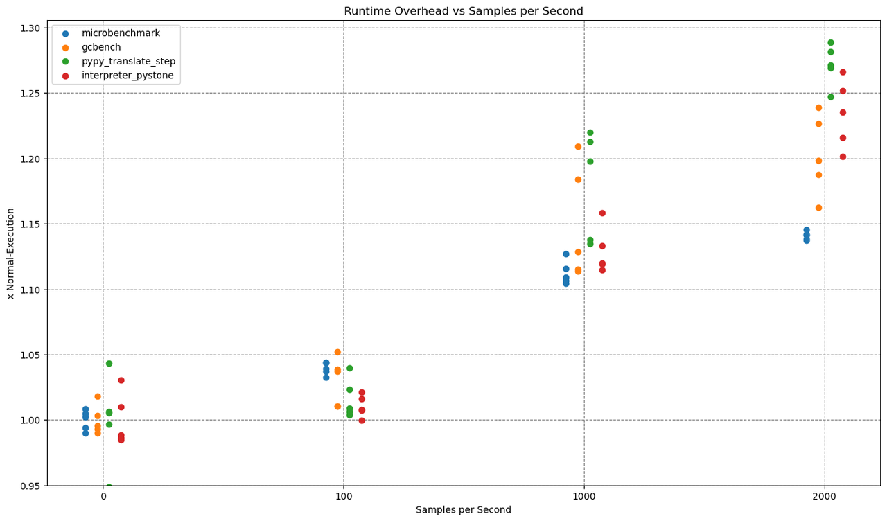
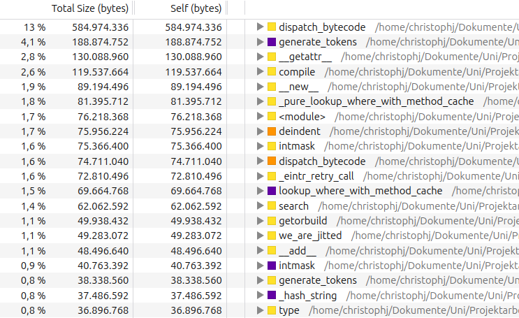
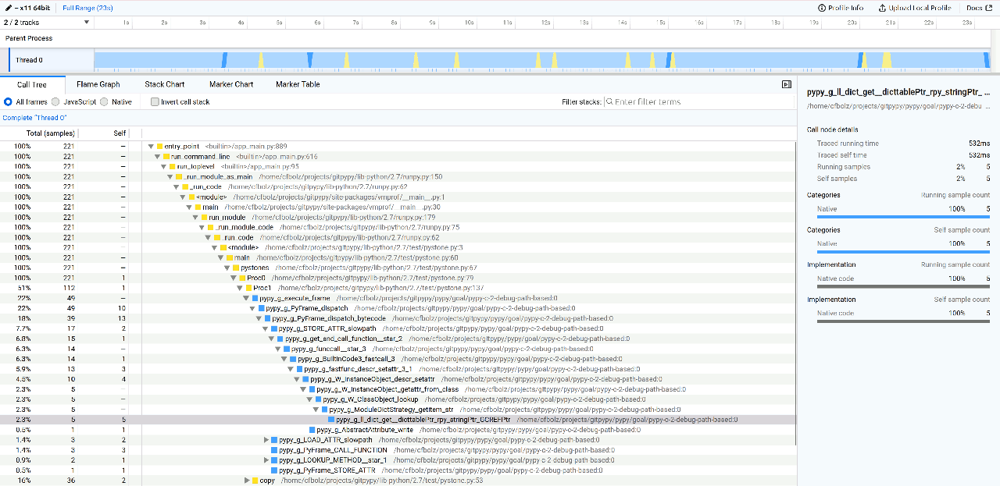

PyPy v7.3.19 release
PyPy v7.3.19: release of python 2.7, 3.10 and 3.11 beta
The PyPy team is proud to release version 7.3.19 of PyPy. This is primarily a bug-fix release fixing JIT-related problems and follows quickly on the heels of the previous release on Feb 6, 2025.
This release includes a python 3.11 interpreter. There were bugs in the first beta that could prevent its wider use, so we are continuing to call this release "beta". In the next release we will drop 3.10 and remove the "beta" label.
The release includes three different interpreters:
PyPy2.7, which is an interpreter supporting the syntax and the features of Python 2.7 including the stdlib for CPython 2.7.18+ (the
+is for backported security updates)PyPy3.10, which is an interpreter supporting the syntax and the features of Python 3.10, including the stdlib for CPython 3.10.16.
PyPy3.11, which is an interpreter supporting the syntax and the features of Python 3.11, including the stdlib for CPython 3.11.11.
The interpreters are based on much the same codebase, thus the triple release. This is a micro release, all APIs are compatible with the other 7.3 releases. It follows after 7.3.17 release on August 28, 2024.
We recommend updating. You can find links to download the releases here:
We would like to thank our donors for the continued support of the PyPy project. If PyPy is not quite good enough for your needs, we are available for direct consulting work. If PyPy is helping you out, we would love to hear about it and encourage submissions to our blog via a pull request to https://github.com/pypy/pypy.org
We would also like to thank our contributors and encourage new people to join the project. PyPy has many layers and we need help with all of them: bug fixes, PyPy and RPython documentation improvements, or general help with making RPython's JIT even better.
If you are a python library maintainer and use C-extensions, please consider making a HPy / CFFI / cppyy version of your library that would be performant on PyPy. In any case, both cibuildwheel and the multibuild system support building wheels for PyPy.
What is PyPy?
PyPy is a Python interpreter, a drop-in replacement for CPython It's fast (PyPy and CPython performance comparison) due to its integrated tracing JIT compiler.
We also welcome developers of other dynamic languages to see what RPython can do for them.
We provide binary builds for:
x86 machines on most common operating systems (Linux 32/64 bits, Mac OS 64 bits, Windows 64 bits)
64-bit ARM machines running Linux (
aarch64) and macos (macos_arm64).
PyPy supports Windows 32-bit, Linux PPC64 big- and little-endian, Linux ARM 32 bit, RISC-V RV64IMAFD Linux, and s390x Linux but does not release binaries. Please reach out to us if you wish to sponsor binary releases for those platforms. Downstream packagers provide binary builds for debian, Fedora, conda, OpenBSD, FreeBSD, Gentoo, and more.
What else is new?
For more information about the 7.3.19 release, see the full changelog.
Please update, and continue to help us make pypy better.
Cheers, The PyPy Team
Low Overhead Allocation Sampling with VMProf in PyPy's GC
Introduction
There are many time-based statistical profilers around (like VMProf or py-spy just to name a few). They allow the user to pick a trade-off between profiling precision and runtime overhead.
On the other hand there are memory profilers such as memray. They can be handy for finding leaks or for discovering functions that allocate a lot of memory. Memory profilers typlically save every single allocation a program does. This results in precise profiling, but larger overhead.
In this post we describe our experimental approach to low overhead statistical memory profiling. Instead of saving every single allocation a program does, it only saves every nth allocated byte. We have tightly integrated VMProf and the PyPy Garbage Collector to achieve this. The main technical insight is that the check whether an allocation should be sampled can be made free. This is done by folding it into the bump pointer allocator check that the PyPy’s GC uses to find out if it should start a minor collection. In this way the fast path with and without memory sampling are exactly the same.
Background
To get an insight how the profiler and GC interact, lets take a brief look at both of them first.
VMProf
VMProf is a statistical time-based profiler for PyPy. VMProf samples the stack of currently running Python functions a certain user-configured number of times per second. By adjusting this number, the overhead of profiling can be modified to pick the correct trade-off between overhead and precision of the profile. In the resulting profile, functions with huge runtime stand out the most, functions with shorter runtime less so. If you want to get a little more introduction to VMProf and how to use it with PyPy, you may look at this blog post
PyPy’s GC
PyPy uses a generational incremental copying collector. That means there are two spaces for allocated objects, the nursery and the old-space. Freshly allocated objects will be allocated into the nursery. When the nursery is full at some point, it will be collected and all objects that survive will be tenured i.e. moved into the old-space. The old-space is much larger than the nursery and is collected less frequently and incrementally (not completely collected in one go, but step-by-step). The old space collection is not relevant for the rest of the post though. We will now take a look at nursery allocations and how the nursery is collected.
Bump Pointer Allocation in the Nursery
The nursery (a small continuous memory area) utilizes two pointers to keep track from where on the nursery is free and where it ends. They are called nursery_free and nursery_top. When memory is allocated, the GC checks if there is enough space in the nursery left. If there is enough space, the nursery_free pointer will be returned as the start address for the newly allocated memory, and nursery_free will be moved forward by the amount of allocated memory.

def allocate(totalsize): # Save position, where the object will be allocated to as result result = gc.nursery_free # Move nursery_free pointer forward by totalsize gc.nursery_free = result + totalsize # Check if this allocation would exceed the nursery if gc.nursery_free > gc.nursery_top: # If it does => collect the nursery and allocate afterwards result = collect_and_reserve(totalsize) # result is a pointer into the nursery, obj will be allocated there return result def collect_and_reserve(size_of_allocation): # do a minor collection and return the start of the nursery afterwards minor_collection() return gc.nursery_free
Understanding this is crucial for our allocation sampling approach, so let us go through this step-by-step.
We already saw an example on how an allocation into a non-full nursery will look like. But what happens, if the nursery is (too) full?

As soon as an object doesn't fit into the nursery anymore, it will be collected. A nursery collection will move all surviving objects into the old-space, so that the nursery is free afterwards, and the requested allocation can be made.

(Note that this is still a bit of a simplification.)
Sampling Approach
The last section described how the nursery allocation works normally. Now we'll talk how we integrate the new allocation sampling approach into it.
To decide whether the GC should trigger a sample, the sampling logic is integrated into the bump pointer allocation logic. Usually, when there is not enough space in the nursery left to fulfill an allocation request, the nursery will be collected and the allocation will be done afterwards. We reuse that mechanism for sampling, by introducing a new pointer called sample_point that is calculated by sample_point = nursery_free + sample_n_bytes where sample_n_bytes is the number of bytes allocated before a sample is made (i.e. our sampling rate).
Imagine we'd have a nursery of 2MB and want to sample every 512KB allocated, then you could imagine our nursery looking like that:

We use the sample point as nursery_top, so that allocating a chunk of 512KB would exceed the nursery top and start a nursery collection. But of course we don't want to do a minor collection just then, so before starting a collection, we need to check if the nursery is actually full or if that is just an exceeded sample point. The latter will then trigger a VMprof stack sample. Afterwards we don't actually do a minor collection, but change nursery_top and immediately return to the caller.
The last picture is a conceptual simplification. Only one sampling point exists at any given time. After we created the sampling point, it will be used as nursery top, if exceeded at some point, we will just add sample_n_bytes to that sampling point, i.e. move it forward.
Here's how the updated collect_and_reserve function looks like:
def collect_and_reserve(size_of_allocation): # Check if we exceeded a sample point or if we need to do a minor collection if gc.nursery_top == gc.sample_point: # One allocation could exceed multiple sample points # Sample, move sample_point forward vmprof.sample_now() gc.sample_point += sample_n_bytes # Set sample point as new nursery_top if it fits into the nursery if sample_point <= gc.real_nursery_top: gc.nursery_top = sample_point # Or use the real nursery top if it does not fit else: gc.nursery_top = gc.real_nursery_top # Is there enough memory left inside the nursery if gc.nursery_free + size_of_allocation <= gc.nursery_top: # Yes => move nursery_free forward gc.nursery_free += size_of_allocation return gc.nursery_free # We did not exceed a sampling point and must do a minor collection, or # we exceeded a sample point but we needed to do a minor collection anyway minor_collection() return gc.nursery_free
Why is the Overhead ‘low’
The most important property of our approach is that the bump-pointer fast path is not changed at all. If sampling is turned off, the slow path in collect_and_reserve has three extra instructions for the if at the beginning, but are only a very small amount of overhead, compared to doing a minor collection.
When sampling is on, the extra logic in collect_and_reserve gets executed. Every time an allocation exceeds the sample_point, collect_and_reserve will sample the Python functions currently executing. The resulting overhead is directly controlled by sample_n_bytes. After sampling, the sample_point and nursery_top must be set accordingly. This will be done once after sampling in collect_and_reserve. At some point a nursery collection will free the nursery and set the new sample_point afterwards.
That means that the overhead mostly depends on the sampling rate and the rate at which the user program allocates memory, as the combination of those two factors determines the amount of samples.
Since the sampling rate can be adjusted from as low as 64 Byte to a theoretical maximum of ~4 GB (at the moment), the tradeoff between number of samples (i.e. profiling precision) and overhead can be completely adjusted.
We also suspect linkage between user program stack depth and overhead (a deeper stack takes longer to walk, leading to higher overhead), especially when walking the C call stack to.
Sampling rates bigger than the nursery size
The nursery usually has a size of a few megabytes, but profiling long-runningor larger applications with tons of allocations could result in very high number of samples per second (and thus overhead). To combat that it is possible to use sampling rates higher than the nursery size.
The sampling point is not limited by the nursery size, but if it is 'outside' the nursery (e.g. because sample_n_bytes is set to twice the nursery size) it won't be used as nursery_top until it 'fits' into the nursery.

After every nursery collection, we'd usually set the sample_point to nursery_free + sample_n_bytes, but if it is larger than the nursery, then the amount of collected memory during the last nursery collection is subtracted from sample_point.

At some point the sample_point will be smaller than the nursery size, then it will be used as nursery_top again to trigger a sample when exceeded.
Differences to Time-Based Sampling
As mentioned in the introduction, time-based sampling ‘hits’ functions with high runtime, and allocation-sampling ‘hits’ functions allocating much memory. But are those always different functions? The answer is: sometimes. There can be functions allocating lots of memory, that do not have a (relative) high runtime.
Another difference to time-based sampling is that the profiling overhead does not solely depend on the sampling rate (if we exclude a potential stack-depth - overhead correlation for now) but also on the amount of memory the user code allocates.
Let us look at an example:
If we’d sample every 1024 Byte and some program A allocates 3 MB and runs for 5 seconds, and program B allocates 6 MB but also runs for 5 seconds, there will be ~3000 samples when profiling A, but ~6000 samples when profiling B. That means we cannot give a ‘standard’ sampling rate like time-based profilers use to do (e.g. vmprof uses ~1000 samples/s for time sampling), as the number of resulting samples, and thus overhead, depends on sampling rate and amount of memory allocated by the program.
For testing and benchmarking, we usually started with a sampling rate of 128Kb and then halved or doubled that (multiple times) depending on sample counts, our need for precision (and size of the profile).
Evaluation
Overhead
Now let us take a look at the allocation sampling overhead, by profiling some benchmarks.
The x-axis shows the sampling rate, while the y-axis shows the overhead, which is computed as runtime_with_sampling / runtime_without_sampling.
All benchmarks were executed five times on a PyPy with JIT and native profiling enabled, so that every dot in the plot is one run of a benchmark.

As you probably expected, the Overhead drops with higher allocation sampling rates. Reaching from as high as ~390% for 32kb allocation sampling to as low as < 10% for 32mb.
Let me give one concrete example: One run of the microbenchmark at 32kb sampling took 15.596 seconds and triggered 822050 samples.
That makes a ridiculous amount of 822050 / 15.596 = ~52709 samples per second.
There is probably no need for that amount of samples per second, so that for 'real' application profiling a much higher sampling rate would be sufficient.
Let us compare that to time sampling.
This time we ran those benchmarks with 100, 1000 and 2000 samples per second.

The overhead varies with the sampling rate. Both with allocation and time sampling, you can reach any amount of overhead and any level of profiling precision you want. The best approach probably is to just try out a sampling rate and choose what gives you the right tradeoff between precision and overhead (and disk usage).
The benchmarks used are:
microbenchmark
- https://github.com/Cskorpion/microbenchmark
pypy microbench.py 65536
gcbench
- https://github.com/pypy/pypy/blob/main/rpython/translator/goal/gcbench.py
- print statements removed
pypy gcbench.py 1
pypy translate step
- first step of the pypy translation (annotation step)
pypy path/to/rpython --opt=0 --cc=gcc --dont-write-c-files --gc=incminimark --annotate path/to/pypy/goal/targetpypystandalone.py
interpreter pystone
- pystone benchmark on top of an interpreted pypy on top of a translated pypy
pypy path/to/pypy/bin/pyinteractive.py -c "import test.pystone; test.pystone.main(1)"
All benchmarks executed on:
- Kubuntu 24.04
- AMD Ryzen 7 5700U
- 24gb DDR4 3200MHz (dual channel)
-
SSD benchmarking at read: 1965 MB/s, write: 227 MB/s
- Sequential 1MB 1 Thread 8 Queues
-
Self built PyPy with allocation sampling features
-
Modified VMProf with allocation sampling support
Example
We have also modified vmprof-firefox-converter to show the allocation samples in the Firefor Profiler UI. With the techniques from this post, the output looks like this:

While this view is interesting, it would be even better if we could also see what types of objects are being allocated in these functions. We will take about how to do this in a future blog post.
Conclusion
In this blog post we introduced allocation sampling for PyPy by going through the technical aspects and the corresponding overhead. In a future blog post, we are going to dive into the actual usage of allocation sampling with VMProf, and show an example case study. That will be accompanied by some new improvements and additional features, like extracting the type of an object that triggered a sample.
So far all this work is still experimental and happening on PyPy branches but we hope to get the technique stable enough to merge it to main and ship it with PyPy eventually.
-- Christoph Jung and CF Bolz-Tereick
PyPy v7.3.18 release
PyPy v7.3.18: release of python 2.7, 3.10 and 3.11 beta
The PyPy team is proud to release version 7.3.18 of PyPy.
This release includes a python 3.11 interpreter. We are labelling it "beta" because it is the first one. In the next release we will drop 3.10 and remove the "beta" label. There are a particularly large set of bugfixes in this release thanks to @devdanzin using fusil on the 3.10 builds, originally written by Victor Stinner. Other significant changes:
We have updated libffi shipped in our portable builds. We also now statically link to libffi where possible which reduces the number of shared object dependencies.
We have added code to be able to show the native function names when profiling with VMProf. So far only Linux supports this feature.
We have added a PEP 768-inspired remote debugging facility.
The HPy backend has been updated to latest HPy HEAD
The release includes three different interpreters:
PyPy2.7, which is an interpreter supporting the syntax and the features of Python 2.7 including the stdlib for CPython 2.7.18+ (the
+is for backported security updates)PyPy3.10, which is an interpreter supporting the syntax and the features of Python 3.10, including the stdlib for CPython 3.10.16.
PyPy3.11, which is an interpreter supporting the syntax and the features of Python 3.11, including the stdlib for CPython 3.11.11.
The interpreters are based on much the same codebase, thus the triple release. This is a micro release, all APIs are compatible with the other 7.3 releases. It follows after 7.3.17 release on August 28, 2024.
We recommend updating. You can find links to download the releases here:
We would like to thank our donors for the continued support of the PyPy project. If PyPy is not quite good enough for your needs, we are available for direct consulting work. If PyPy is helping you out, we would love to hear about it and encourage submissions to our blog via a pull request to https://github.com/pypy/pypy.org
We would also like to thank our contributors and encourage new people to join the project. PyPy has many layers and we need help with all of them: bug fixes, PyPy and RPython documentation improvements, or general help with making RPython's JIT even better.
If you are a python library maintainer and use C-extensions, please consider making a HPy / CFFI / cppyy version of your library that would be performant on PyPy. In any case, both cibuildwheel and the multibuild system support building wheels for PyPy.
VMProf Native Symbol Names
When running VMProf profiling with native profiling enabled, PyPy did so far not produce function names for C functions. The output looked like this:
pypy -m vmprof ~/projects/gitpypy/lib-python/2.7/test/pystone.py Pystone(1.1) time for 50000 passes = 0.0109887 This machine benchmarks at 4.55011e+06 pystones/second vmprof output: %: name: location: 100.0% entry_point <builtin>/app_main.py:874 100.0% run_command_line <builtin>/app_main.py:601 100.0% run_toplevel <builtin>/app_main.py:93 100.0% _run_module_as_main /home/user/bin/pypy-c-jit-170203-99a72243b541-linux64/lib-python/2.7/runpy.py:150 100.0% _run_code /home/user/bin/pypy-c-jit-170203-99a72243b541-linux64/lib-python/2.7/runpy.py:62 100.0% <module> /home/user/bin/pypy-c-jit-170203-99a72243b541-linux64/site-packages/vmprof/__main__.py:1 100.0% main /home/user/bin/pypy-c-jit-170203-99a72243b541-linux64/site-packages/vmprof/__main__.py:30 100.0% run_path /home/user/bin/pypy-c-jit-170203-99a72243b541-linux64/lib-python/2.7/runpy.py:238 100.0% _run_module_code /home/user/bin/pypy-c-jit-170203-99a72243b541-linux64/lib-python/2.7/runpy.py:75 100.0% <module> /home/user/projects/gitpypy/lib-python/2.7/test/pystone.py:3 100.0% main /home/user/projects/gitpypy/lib-python/2.7/test/pystone.py:60 100.0% pystones /home/user/projects/gitpypy/lib-python/2.7/test/pystone.py:67 100.0% Proc0 /home/user/projects/gitpypy/lib-python/2.7/test/pystone.py:79 76.9% <unknown code> 69.2% <unknown code> 53.8% <unknown code> 53.8% <unknown code> 46.2% <unknown code> 46.2% <unknown code> 38.5% <unknown code> 38.5% Proc8 /home/user/projects/gitpypy/lib-python/2.7/test/pystone.py:212 30.8% <unknown code> ...
We can now symbolify these C functions and give function names and which shared library they come from, at least on Linux:
Pystone(1.1) time for 50000 passes = 0.218967 This machine benchmarks at 228345 pystones/second vmprof output: %: name: location: 100.0% entry_point <builtin>/app_main.py:889 100.0% run_command_line <builtin>/app_main.py:616 100.0% run_toplevel <builtin>/app_main.py:95 100.0% _run_module_as_main /home/user/projects/gitpypy/lib-python/2.7/runpy.py:150 100.0% _run_code /home/user/projects/gitpypy/lib-python/2.7/runpy.py:62 100.0% <module> /home/user/projects/gitpypy/site-packages/vmprof/__main__.py:1 100.0% main /home/user/projects/gitpypy/site-packages/vmprof/__main__.py:30 100.0% run_module /home/user/projects/gitpypy/lib-python/2.7/runpy.py:179 100.0% _run_module_code /home/user/projects/gitpypy/lib-python/2.7/runpy.py:75 100.0% <module> /home/user/projects/gitpypy/lib-python/2.7/test/pystone.py:3 100.0% main /home/user/projects/gitpypy/lib-python/2.7/test/pystone.py:60 100.0% pystones /home/user/projects/gitpypy/lib-python/2.7/test/pystone.py:67 100.0% Proc0 /home/user/projects/gitpypy/lib-python/2.7/test/pystone.py:79 95.5% n:pypy_g_execute_frame:0:pypy-c 91.4% n:pypy_g_PyFrame_dispatch:0:pypy-c 63.8% n:pypy_g_PyFrame_dispatch_bytecode:0:pypy-c 49.8% Proc1 /home/user/projects/gitpypy/lib-python/2.7/test/pystone.py:137 17.6% copy /home/user/projects/gitpypy/lib-python/2.7/test/pystone.py:53 13.6% n:pypy_g_PyFrame_CALL_FUNCTION:0:pypy-c 10.4% Proc8 /home/user/projects/gitpypy/lib-python/2.7/test/pystone.py:212 8.6% n:pypy_g_STORE_ATTR_slowpath:0:pypy-c
This becomes even more useful when using the VMProf Firefox converter, which uses the Firefox Profiler Web UI to visualize profiling output:

What is PyPy?
PyPy is a Python interpreter, a drop-in replacement for CPython It's fast (PyPy and CPython performance comparison) due to its integrated tracing JIT compiler.
We also welcome developers of other dynamic languages to see what RPython can do for them.
We provide binary builds for:
x86 machines on most common operating systems (Linux 32/64 bits, Mac OS 64 bits, Windows 64 bits)
64-bit ARM machines running Linux (
aarch64) and macos (macos_arm64).
PyPy supports Windows 32-bit, Linux PPC64 big- and little-endian, Linux ARM 32 bit, RISC-V RV64IMAFD Linux, and s390x Linux but does not release binaries. Please reach out to us if you wish to sponsor binary releases for those platforms. Downstream packagers provide binary builds for debian, Fedora, conda, OpenBSD, FreeBSD, Gentoo, and more.
What else is new?
For more information about the 7.3.18 release, see the full changelog.
Please update, and continue to help us make pypy better.
Cheers, The PyPy Team
Musings on Tracing in PyPy
Last summer, Shriram Krishnamurthi asked on Twitter:
"I'm curious what the current state of tracing JITs is. They used to be all the rage for a while, then I though I heard they weren't so effective, then I haven't heard of them at all. Is the latter because they are ubiquitous, or because they proved to not work so well?"
I replied with my personal (pretty subjective) opinions about the question in a lengthy Twitter thread (which also spawned an even lengthier discussion). I wanted to turn what I wrote there into a blog post to make it more widely available (Twitter is no longer easily consumable without an account), and also because I'm mostly not using Twitter anymore. The blog post i still somewhat terse, I've written a small background section and tried to at least add links to further information. Please ask in the comments if something is particularly unclear.
Background
I'll explain a few of the central terms of the rest of the post. JIT compilers are compilers that do their work at runtime, interleaved (or concurrent with) the execution of the program. There are (at least) two common general styles of JIT compiler architectures. The most common one is that of a method-based JIT, which will compile one method or function at a time. Then there are tracing JIT compilers, which generate code by tracing the execution of the user's program. They often focus on loops as their main unit of compilation.
Then there is the distinction between a "regular" JIT compiler and that of a meta-JIT. A regular JIT is built to compile one specific source language to machine code. A meta-JIT is a framework for building JIT compilers for a variety of different languages, reusing as much machinery as possible between the different implementation.
Personal and Project Context
Some personal context: my perspective is informed by nearly two decades of work on PyPy. PyPy's implementation language, RPython, has support for a meta-JIT, which allows it to reuse its JIT infrastructure for the various Python versions that we support (currently we do releases of PyPy2.7 and PyPy3.10 together). Our meta-JIT infrastructure has been used for some experimental different languages like:
- PyPy's regular expression engine
- RPySom, a tiny Smalltalk
- Ruby
- PHP
- Prolog,
- Racket,
- a database (SQLite)
- Lox, the language of Crafting Interpreters
- an ARM and RISC-V emulator
- and many more
Those implementations had various degrees of maturity and many of them are research software and aren't maintained any more.
PyPy gives itself the goal to try to be extremely compatible with all the quirks of the Python language. We don't change the Python language to make things easier to compile and we support the introspection and debugging features of Python. We try very hard to have no opinions on language design. The CPython core developers come up with the semantics, we somehow deal with them.
Meta-tracing
PyPy started using a tracing JIT approach not because we thought method-based just-in-time compilers are bad. Historically we had tried to implement a method-based meta-JIT that was using partial evaluation (we wrote three or four method-based prototypes that all weren't as good as we hoped). After all those experiments failed we switched to the tracing approach, and only at this point did our meta-JIT start producing interesting performance.
In the meta-JIT context tracing has good properties, because tracing has relatively understandable behavior and its easy(ish) to tweak how things work with extra annotations in the interpreter source.
Another reason why meta-tracing often works well for PyPy is that it can often slice through the complicated layers of Python quite effectively and remove a lot of overhead. Python is often described as simple, but I think that's actually a misconception. On the implementation level it's a very big and complicated language, and it is also continuously getting new features every year (the language is quite a bit more complicated than Javascript, for example1).
Truffle
Later Truffle came along and made a method-based meta-JIT using partial evaluation work. However Truffle (and Graal) has had significantly more people working on it and much more money invested. In addition, it at first required a quite specific style of AST-based interpreters (in the last few years they have also added support for bytecode-based interpreters).
It's still my impression that getting similar results with Truffle is more work for language implementers than with RPython, and the warmup of Truffle can often pretty bad. But Truffle is definitely an existence proof that meta-JITs don't have to be based on tracing.
Tracing, the good
Let's now actually get to he heart of Shriram's question and discuss some of the advantages of tracing that go beyond the ease of using tracing for a meta-JIT.
Tracing allows for doing very aggressive partial inlining, Following just the hot path through lots of layers of abstraction is obviously often really useful for generating fast code.
It's definitely possible to achieve the same effect in a method-based context with path splitting. But it requires a lot more implementation work and is not trivial, because the path execution counts of inlined functions can often be very call-site dependent. Tracing, on the other hand, gives you call-site dependent path splitting "for free".
(The aggressive partial inlining and path splitting is even more important in the meta-tracing context of PyPy, where some of inlined layers are a part of the language runtime, and where rare corner cases that are never executed in practice are everywhere.)
Another advantage of tracing is that it makes a number of optimizations really easy to implement, because there are (to first approximation) no control flow merges. This makes all the optimizations that we do (super-)local optimizations, that operate on a single (very long) basic block. This allows the JIT to do the optimizations in exactly one forwards and one backwards pass. An example is our allocation removal/partial escape analysis pass, which is quite simple, whereas the version for general control flow has a lot more complexity, particularly in its handling of loops.
This ease of implementation of optimizations allowed us to implement some pretty decent optimizations. Our allocation removal, the way PyPy's JIT can reason about the heap, about dictionary accesses, about properties of functions of the runtime, about the range and known bits of integer variables is all quite solid.
Tracing, the bad
Tracing also comes with a significant number of downsides. Probably the biggest one is that it tends to have big performance cliffs (PyPy certainly has them, and other tracing JITs such as TraceMonkey had them too). In my experience the 'good' cases of tracing are really good, but if something goes wrong you are annoyed and performance can become a lot slower. With a simple method JIT the performance is often much more "even".
Another set of downsides is that tracing has a number of corner cases and "weird" behaviour in certain situations. Questions such as: - When do you stop inlining? - What happens when you trace recursion? - What happens if your traces are consistently too long, even without inlining? - and so on...
Some of these problems can be solved by adding heuristics to the tracing JIT, but doing so loses a lot of the simplicity of tracing again.
There are also some classes of programs that tend to generally perform quite poorly when they are executed by a tracing JIT, bytecode interpreters in particularly, and other extremely unpredictably branchy code. This is because the core assumption of the tracing jit "loops take similar control flow paths" is just really wrong in the case of interpreters.
Discussion
The Twitter thread spawned quite a bit of discussion, please look at the original thread for all of the comments. Here are three that I wanted to highlight:
"This is a really great summary. Meta-tracing is probably the one biggest success story. I think it has to do with how big and branchy the bytecode implementations are for typical dynamic languages; the trace captures latent type feedback naturally.
There is an upper limit, tho."
I agree with this completely. The complexity of Python bytecodes is a big factor for why meta tracing works well for us. But also in Python there are many builtin types (collection types, types that form the meta-object protocol of Python, standard library modules implemented in C/RPython) and tracing operations on them is very important too, for good performance.
"I think Mozilla had a blog post talking more about the difficulty with TraceMonkey, could only find this one: https://blog.mozilla.org/nnethercote/category/jagermonkey/"
"imo doing tracing for JS is really hard mode, because the browser is so incredibly warmup-sensitive. IIRC tracemonkey used a really low loop trip count (single-digit?) to decide when to start tracing (pypy uses >1000). the JS interpreters of the time were also quite slow."
In the meantime there were some more reminiscences about tracing in Javascript by Shu-Yu Guo in a panel discussion and by Jason Orendorff on Mastodon.
"There are a number of corner cases you have to deal with in a tracing JIT. It's unfortunately not as simple and easy as the initial papers would have you believe. One example is how would you deal with a loop inside a loop? Is your tracing now recursive?
There's been some research work on trace stitching to deal with trace explosion but it does add complexity. With the increase in complexity, I think most industrial VM developers would rather pick tried-and-true method-based JITs that are well understood."
Conclusion
Given access to enough developers and in the context of "normal" jitting (ie not meta-jitting) it's very unclear to me that you should use tracing. It makes more sense to rather spend effort on a solid control-flow-graph-based baseline and then try to get some of the good properties of tracing on top (path splitting, partial inlining, partial escape analysis, etc).
For PyPy with its meta-JIT (and the fact that we don't have particularly much funding nor people) I still think tracing was/is a relatively pragmatic choice. When I talked with Sam Tobin-Hochstadt about this topic recently he characterized it like this: "tracing is a labor-saving device for compiler authors".
Performance-wise PyPy is still quite hard to beat in the cases where it works well (i.e. pure Python code that doesn't use too many C modules, which are supported but slow in PyPy). In general, there are very few JITs for Python (particularly with the constraint of not being "allowed" to change the language), the most competitive other ones are GraalPy, also based on a meta-JIT approach. Instagram is running on Cinder and also CPython has grown a JIT recently which was part of the recent 3.13 release, but only as an off-by-default build option, so I'm very excited about how Python's performance will develop in the next years!
-
(A side point: people who haven't worked on Python tend to underestimate its complexity and pace of development. A pet peeve of mine is C++ compiler devs/static analysis/Javascript people/other well-meaning communities coming with statements like "why don't you just..." 🤷♀️) ↩
Towards PyPy3.11 - an update
We1 are steadily working towards a Python 3.11 interpreter, which will be part of the upcoming PyPy 7.3.18 release. Along with that, we also recently updated speed.pypy.org to compare PyPy's performance to CPython 3.11 (it used to be CPython 3.7).
Guest Post: Final Encoding in RPython Interpreters
Introduction
This post started as a quick note summarizing a recent experiment I carried out upon a small RPython interpreter by rewriting it in an uncommon style. It is written for folks who have already written some RPython and want to take a deeper look at interpreter architecture.
Some experiments are about finding solutions to problems. This experiment is about taking a solution which is already well-understood and applying it in the context of RPython to find a new approach. As we will see, there is no real change in functionality or the number of clauses in the interpreter; it's more like a comparison between endo- and exoskeletons, a different arrangement of equivalent bones and plates.
Overview
An RPython interpreter for a programming language generally does three or four things, in order:
- Read and parse input programs
- Encode concrete syntax as abstract syntax
- Optionally, optimize or reduce the abstract syntax
- Evaluate the abstract syntax: read input data, compute, print output data, etc.
Today we'll look at abstract syntax. Most programming languages admit a concrete parse tree which is readily abstracted to provide an abstract syntax tree (AST). The AST is usually encoded with the initial style of encoding. An initial encoding can be transformed into any other encoding for the same AST, looks like a hierarchy of classes, and is implemented as a static structure on the heap.
In contrast, there is also a final encoding. A final encoding can be
transformed into by any other encoding, looks like an interface for the
actions of the interpreter, and is implemented as an unwinding structure on
the stack. From the RPython perspective, Python builtin modules like os or
sys are final encodings for features of the operating system; the underlying
implementation is different when translated or untranslated, but the interface
used to access those features does not change.
In RPython, an initial encoding is built from a hierarchy of classes. Each
class represents a type of tree nodes, corresponding to a parser production in
the concrete parse tree. Each class instance therefore represents an
individual tree node. The fields of a class, particularly those filled during
.__init__(), store pre-computed properties of each node; methods can be used
to compute node properties on demand. This seems like an obvious and simple
approach; what other approaches could there be? We need an example.
Final Encoding of Brainfuck
We will consider Brainfuck, a simple Turing-complete programming language. An example Brainfuck program might be:
[-]
This program is built from a loop and a decrement, and sets a cell to zero. In an initial encoding which follows the algebraic semantics of Brainfuck, the program could be expressed by applying class constructors to build a structure on the heap:
Loop(Plus(-1))
A final encoding is similar, except that class constructors are replaced by methods, the structure is built on the stack, and we are parameterized over the choice of class:
lambda cls: cls.loop(cls.plus(-1))
In ordinary Python, transforming between these would be trivial, and mostly is a matter of passing around the appropriate class. Indeed, initial and final encodings are equivalent; we'll return to that fact later. However, in RPython, all of the types must line up, and classes must be determined before translation. We'll need to monomorphize our final encodings, using some RPython tricks later on. Before that, let's see what an actual Brainfuck interface looks like, so that we can cover all of the difficulties with final encoding.
Before we embark, please keep in mind that local code doesn't know what cls
is. There's no type-safe way to inspect an arbitrary semantic domain. In the
initial-encoded version, we can ask isinstance(bf, Loop) to see whether an
AST node is a loop, but there simply isn't an equivalent for final-encoded
ASTs. So, there is an implicit challenge to think about: how do we evaluate a
program in an arbitrary semantic domain? For bonus points, how do we optimize
a program without inspecting the types of its AST nodes?
What follows is a dissection of this module at the given revision. Readers may find it satisfying to read the entire interpreter top to bottom first; it is less than 300 lines.
Core Functionality
Final encoding is given as methods on an interface. These five methods correspond precisely to the summands of the algebra of Brainfuck.
class BF(object): # Other methods elided def plus(self, i): pass def right(self, i): pass def input(self): pass def output(self): pass def loop(self, bfs): pass
Note that the .loop() method takes another program as an argument.
Initial-encoded ASTs have other initial-encoded ASTs as fields on class
instances; final-encoded ASTs have other final-encoded ASTs as parameters
to interface methods. RPython infers all of the types, so the reader has to
know that i is usually an integer while bfs is a sequence of Brainfuck
operations.
We're using a class to implement this functionality. Later, we'll treat it as a mixin, rather than a superclass, to avoid typing problems.
Monoid
In order to optimize input programs, we'll need to represent the underlying monoid of Brainfuck programs. To do this, we add the signature for a monoid:
class BF(object): # Other methods elided def unit(self): pass def join(self, l, r): pass
This is technically a unital magma, since RPython doesn't support algebraic laws, but we will enforce the algebraic laws later on during optimization. We also want to make use of the folklore that free monoids are lists, allowing callers to pass a list of actions which we'll reduce with recursion:
class BF(object): # Other methods elided def joinList(self, bfs): if not bfs: return self.unit() elif len(bfs) == 1: return bfs[0] elif len(bfs) == 2: return self.join(bfs[0], bfs[1]) else: i = len(bfs) >> 1 return self.join(self.joinList(bfs[:i]), self.joinList(bfs[i:]))
.joinList() is a little bulky to implement, but Wirth's principle applies:
the interpreter is shorter with it than without it.
Idioms
Finally, our interface includes a few high-level idioms, like the zero program
shown earlier, which are defined in terms of low-level behaviors. In an
initial encoding, these could be defined as module-level functions; here, we
define them on the mixin class BF.
class BF(object): # Other methods elided def zero(self): return self.loop(self.plus(-1)) def move(self, i): return self.scalemove(i, 1) def move2(self, i, j): return self.scalemove2(i, 1, j, 1) def scalemove(self, i, s): return self.loop(self.joinList([ self.plus(-1), self.right(i), self.plus(s), self.right(-i)])) def scalemove2(self, i, s, j, t): return self.loop(self.joinList([ self.plus(-1), self.right(i), self.plus(s), self.right(j - i), self.plus(t), self.right(-j)]))
Interface-oriented Architecture
Applying Interfaces
Now, we hack at RPython's object model until everything translates. First, consider the task of pretty-printing. For Brainfuck, we'll simply regurgitate the input program as a Python string:
class AsStr(object): import_from_mixin(BF) def unit(self): return "" def join(self, l, r): return l + r def plus(self, i): return '+' * i if i > 0 else '-' * -i def right(self, i): return '>' * i if i > 0 else '<' * -i def loop(self, bfs): return '[' + bfs + ']' def input(self): return ',' def output(self): return '.'
Via rlib.objectmodel.import_from_mixin, no stressing with covariance of
return types is required. Instead, we shift from a Java-esque view of classes
and objects, to an OCaml-ish view of prebuilt classes and constructors.
AsStr is monomorphic, and any caller of it will have to create their own
covariance somehow. For example, here are the first few lines of the parsing
function:
@specialize.argtype(1) def parse(s, domain): ops = [domain.unit()] # Parser elided to preserve the reader's attention
By invoking rlib.objectmodel.specialize.argtype, we make copies of the
parsing function, up to one per call site, based on our choice of semantic
domain. Oleg calls these "symantics"
but I prefer "domain" in code. Also, note how the parsing stack starts with
the unit of the monoid, which corresponds to the empty input string; the
parser will repeatedly use the monoidal join to build up a parsed expression
without inspecting it. Here's a small taste of that:
while i < len(s): char = s[i] if char == '+': ops[-1] = domain.join(ops[-1], domain.plus(1)) elif char == '-': ops[-1] = domain.join(ops[-1], domain.plus(-1)) # and so on
The reader may feel justifiably mystified; what breaks if we don't add these
magic annotations? Well, the translator will throw UnionError because the
low-level types don't match. RPython only wants to make one copy of functions
like parse() in its low-level representation, and each copy of parse()
will be compiled to monomorphic machine code. In this interpreter, in order to
support parsing to an optimized string and also parsing to an evaluator, we
need two copies of parse(). It is okay to not fully understand this at
first.
Composing Interfaces
Earlier, we noted that an interpreter can optionally optimize input programs after parsing. To support this, we'll precompose a peephole optimizer onto an arbitrary domain. We could also postcompose with a parser instead, but that sounds more difficult. Here are the relevant parts:
def makePeephole(cls): domain = cls() def stripDomain(bfs): return domain.joinList([t[0] for t in bfs]) class Peephole(object): import_from_mixin(BF) def unit(self): return [] def join(self, l, r): return l + r # Actual definition elided... for now... return Peephole, stripDomain
Don't worry about the actual optimization yet. What's important here is the
pattern of initialization of semantic domains. makePeephole is an
SML-style functor on semantic
domains: given a final encoding of Brainfuck, it produces another final
encoding of Brainfuck which incorporates optimizations. The helper
stripDomain is a finalizer which performs the extraction from the
optimizer's domain to the underlying cls that was passed in at translation
time. For example, let's optimize pretty-printing:
AsStr, finishStr = makePeephole(AsStr)
Now, it only takes one line to parse and print an optimized AST without ever building it on the heap. To be pedantic, fragments of the output string will be heap-allocated, but the AST's node structure will only ever be stack-allocated. Further, to be shallow, the parser is written to prevent malicious input from causing a stack overflow, and this forces it to maintain a heap-allocated RPython list of intermediate operations inside loops.
print finishStr(parse(text, AsStr()))
Performance
But is it fast? Yes. It's faster than the prior version, which was initial-encoded, and also faster than Andrew Brown's classic version (part 1, part 2). Since Brown's interpreter does not perform much optimization, we will focus on how final encoding can outperform initial encoding.
JIT
First, why is it faster than the same interpreter with initial encoding? Well,
it still has initial encoding from the JIT's perspective! There is an Op
class with a hierarchy of subclasses implementing individual behaviors. A
sincere tagless-final student, or those who remember Stop Writing Classes
(2012, Pycon
US), will
recognize that the following classes could be plain functions, and should
think of the classes as a concession to RPython's lack of support for lambdas
with closures rather than an initial encoding. We aren't ever going to
directly typecheck any Op, but the JIT will generate typechecking guards
anyway, so we effectively get a fully-promoted AST inlined into each JIT
trace. First, some simple behaviors:
class Op(object): _immutable_ = True class _Input(Op): _immutable_ = True def runOn(self, tape, position): tape[position] = ord(os.read(0, 1)[0]) return position Input = _Input() class _Output(Op): _immutable_ = True def runOn(self, tape, position): os.write(1, chr(tape[position])) return position Output = _Output() class Add(Op): _immutable_ = True _immutable_fields_ = "imm", def __init__(self, imm): self.imm = imm def runOn(self, tape, position): tape[position] += self.imm return position
The JIT does technically have less information than before; it no longer knows
that a sequence of immutable operations is immutable enough to be worth
unrolling, but a bit of rlib.jit.unroll_safe fixes that:
class Seq(Op): _immutable_ = True _immutable_fields_ = "ops[*]", def __init__(self, ops): self.ops = ops @unroll_safe def runOn(self, tape, position): for op in self.ops: position = op.runOn(tape, position) return position
Finally, the JIT entry point is at the head of each loop, just like with prior interpreters. Since Brainfuck doesn't support mid-loop jumps, there's no penalty for only allowing merge points at the head of the loop.
class Loop(Op): _immutable_ = True _immutable_fields_ = "op", def __init__(self, op): self.op = op def runOn(self, tape, position): op = self.op while tape[position]: jitdriver.jit_merge_point(op=op, position=position, tape=tape) position = op.runOn(tape, position) return position
That's the end of the implicit challenge. There's no secret to it; just
evaluate the AST. Here's part of the semantic domain for evaluation, as well
as the "functor" to optimize it. In AsOps.join() are the only
isinstance() calls in the entire interpreter! This is acceptable because
Seq is effectively a type wrapper for an RPython list, so that a list of
operations is also an operation; its list is initial-encoded and available for
inspection.
class AsOps(object): import_from_mixin(BF) def unit(self): return Shift(0) def join(self, l, r): if isinstance(l, Seq) and isinstance(r, Seq): return Seq(l.ops + r.ops) elif isinstance(l, Seq): return Seq(l.ops + [r]) elif isinstance(r, Seq): return Seq([l] + r.ops) return Seq([l, r]) # Other methods elided! AsOps, finishOps = makePeephole(AsOps)
And finally here is the actual top-level code to evaluate the input program. As before, once everything is composed, the actual invocation only takes one line.
tape = bytearray("\x00" * cells) finishOps(parse(text, AsOps())).runOn(tape, 0)
Peephole Optimization
Our peephole optimizer is an abstract interpreter with one instruction of lookahead/rewrite buffer. It implements the aforementioned algebraic laws of the Brainfuck monoid. It also implements idiom recognition for loops. First, the abstract interpreter. The abstract domain has six elements:
class AbstractDomain(object): pass meh, aLoop, aZero, theIdentity, anAdd, aRight = [AbstractDomain() for _ in range(6)]
We'll also tag everything with an integer, so that anAdd or aRight can be
exact annotations. This is the actual Peephole.join() method:
def join(self, l, r): if not l: return r rv = l[:] bfHead, adHead, immHead = rv.pop() for bf, ad, imm in r: if ad is theIdentity: continue elif adHead is aLoop and ad is aLoop: continue elif adHead is theIdentity: bfHead, adHead, immHead = bf, ad, imm elif adHead is anAdd and ad is aZero: bfHead, adHead, immHead = bf, ad, imm elif adHead is anAdd and ad is anAdd: immHead += imm if immHead: bfHead = domain.plus(immHead) elif rv: bfHead, adHead, immHead = rv.pop() else: bfHead = domain.unit() adHead = theIdentity elif adHead is aRight and ad is aRight: immHead += imm if immHead: bfHead = domain.right(immHead) elif rv: bfHead, adHead, immHead = rv.pop() else: bfHead = domain.unit() adHead = theIdentity else: rv.append((bfHead, adHead, immHead)) bfHead, adHead, immHead = bf, ad, imm rv.append((bfHead, adHead, immHead)) return rv
If this were to get much longer, then implementing a
DSL would be worth it,
but this is a short-enough method to inline. The abstract interpretation is
assumed by induction for the left-hand side of the join, save for the final
instruction, which is loaded into a rewrite register. Each instruction on the
right-hand side is inspected exactly once. The logic for anAdd followed by
anAdd is exactly the same as for aRight followed by aRight because they
both have underlying Abelian
groups given by the integers.
The rewrite register is carefully pushed onto and popped off from the
left-hand side in order to cancel out theIdentity, which itself is merely a
unifier for anAdd or aRight of 0.
Note that we generate a lot of garbage. For example, parsing a string of n
'+' characters will cause the peephole optimizer to allocate n instances of
the underlying domain.plus() action, from domain.plus(1) up to
domain.plus(n). An older initial-encoded version of this interpreter used
hash consing to avoid ever
building an op more than once, even loops. It appears more efficient to
generate lots of immutable garbage than to repeatedly hash inputs and search
mutable hash tables, at least for optimizing Brainfuck incrementally during
parsing.
Finally, let's look at idiom recognition. RPython lists are initial-coded, so we can dispatch based on the length of the list, and then inspect the abstract domains of each action.
def isConstAdd(bf, i): return bf[1] is anAdd and bf[2] == i def oppositeShifts(bf1, bf2): return bf1[1] is bf2[1] is aRight and bf1[2] == -bf2[2] def oppositeShifts2(bf1, bf2, bf3): return (bf1[1] is bf2[1] is bf3[1] is aRight and bf1[2] + bf2[2] + bf3[2] == 0) def loop(self, bfs): if len(bfs) == 1: bf, ad, imm = bfs[0] if ad is anAdd and imm in (1, -1): return [(domain.zero(), aZero, 0)] elif len(bfs) == 4: if (isConstAdd(bfs[0], -1) and bfs[2][1] is anAdd and oppositeShifts(bfs[1], bfs[3])): return [(domain.scalemove(bfs[1][2], bfs[2][2]), aLoop, 0)] if (isConstAdd(bfs[3], -1) and bfs[1][1] is anAdd and oppositeShifts(bfs[0], bfs[2])): return [(domain.scalemove(bfs[0][2], bfs[1][2]), aLoop, 0)] elif len(bfs) == 6: if (isConstAdd(bfs[0], -1) and bfs[2][1] is bfs[4][1] is anAdd and oppositeShifts2(bfs[1], bfs[3], bfs[5])): return [(domain.scalemove2(bfs[1][2], bfs[2][2], bfs[1][2] + bfs[3][2], bfs[4][2]), aLoop, 0)] if (isConstAdd(bfs[5], -1) and bfs[1][1] is bfs[3][1] is anAdd and oppositeShifts2(bfs[0], bfs[2], bfs[4])): return [(domain.scalemove2(bfs[0][2], bfs[1][2], bfs[0][2] + bfs[2][2], bfs[3][2]), aLoop, 0)] return [(domain.loop(stripDomain(bfs)), aLoop, 0)]
This ends the bonus question. How do we optimize an unknown semantic domain? We must maintain an abstract context which describes elements of the domain. In initial encoding, we ask an AST about itself. In final encoding, we already know everything relevant about the AST.
The careful reader will see that I didn't really answer that opening question in the JIT section. Because the JIT still ranges over the same operations as before, it can't really be slower; but why is it now faster? Because the optimizer is now slightly better in a few edge cases. It performs the same optimizations as before, but the rigor of abstract interpretation causes it to emit slightly better operations to the JIT backend.
Concretely, improving the optimizer can shorten pretty-printed programs. The Busy Beaver Gauge measures the length of programs which search for solutions to mathematical problems. After implementing and debugging the final-encoded interpreter, I found that two of my entries on the Busy Beaver Gauge for Brainfuck had become shorter by about 2%. (Most other entries are already hand-optimized according to the standard algebra and have no optimization opportunities.)
Discussion
Given that initial and final encodings are equivalent, and noting that RPython's toolchain is written to prefer initial encodings, what did we actually gain? Did we gain anything?
One obvious downside to final encoding in RPython is interpreter size. The example interpreter shown here is a rewrite of an initial-encoded interpreter which can be seen here for comparison. Final encoding adds about 20% more code in this case.
Final encoding is not necessarily more code than initial encoding, though. All AST encodings in interpreters are subject to the Expression Problem, which states that there is generally a quadratic amount of code required to implement multiple behaviors for an AST with multiple types of nodes; specifically, n behaviors for m types of nodes require n × m methods. Initial encodings improve the cost of adding new types of nodes; final encodings improve the cost of adding new behaviors. Final encoding may tend to win in large codebases for mature languages, where the language does not change often but new behaviors are added frequently and maintained for long periods.
Optimizations in final encoding require a bit of planning. The abstract-interpretation approach is solid but relies upon the monoid and its algebraic laws. In the worst case, an entire class hierarchy could be required to encode the abstraction.
It is remarkable to find a 2% improvement in residual program size merely by reimplementing an optimizer as an abstract interpreter respecting the algebraic laws. This could be the most important lesson for compiler engineers, if it happens to generalize.
Final encoding was popularized via the tagless-final movement in OCaml and
Scala, including famously in a series of tutorials by Kiselyov et
al. A "tag", in this jargon, is a
runtime identifier for an object's type or class; a tagless encoding
effectively doesn't allow isinstance() at all. In the above presentation,
tags could be hacked in, but were not materially relevant to most steps. Tags
were required for the final evaluation step, though, and the tagless-final
insight is that certain type systems can express type-safe evaluation without
those tags. We won't go further in this direction because tags also
communicate valuable information to the JIT.
Summarizing Table
| Initial Encoding | Final Encoding |
|---|---|
| hierarchy of classes | signature of interfaces |
| class constructors | method calls |
| built on the heap | built on the stack |
| traversals allocate stack | traversals allocate heap |
tags are available with isinstance()
|
tags are only available through hacks |
| cost of adding a new AST node: one class | cost of adding a new AST node: one method on every other class |
| cost of adding a new behavior: one method on every other class | cost of adding a new behavior: one class |
Credits
Thanks to folks in #pypy on Libera Chat: arigato for the idea, larstiq for
pushing me to write it up, and cfbolz and mattip for reviewing and finding
mistakes. The original IRC discussion leading to this blog post is available
here.
This interpreter is part of the rpypkgs suite, a Nix flake for RPython interpreters. Readers with Nix installed can run this interpreter directly from the flake:
$ nix-prefetch-url https://github.com/MG-K/pypy-tutorial-ko/raw/refs/heads/master/mandel.b $ nix run github:rpypkgs/rpypkgs#bf -- /nix/store/ngnphbap9ncvz41d0fkvdh61n7j2bg21-mandel.b
A DSL for Peephole Transformation Rules of Integer Operations in the PyPy JIT
As is probably apparent from the sequence of blog posts about the topic in the last year, I have been thinking about and working on integer optimizations in the JIT compiler a lot. This work was mainly motivated by Pydrofoil, where integer operations matter a lot more than for your typical Python program.
In this post I'll describe my most recent change, which is a new small domain specific language that I implemented to specify peephole optimizations on integer operations in the JIT. It uses pattern matching to specify how (sequences of) integer operations should be simplified and optimized. The rules are then compiled to RPython code that then becomes part of the JIT's optimization passes.
To make it less likely to introduce incorrect optimizations into the JIT, the rules are automatically proven correct with Z3 as part of the build process (for a more hands-on intro to how that works you can look at the knownbits post). In this blog post I want to motivate why I introduced the DSL and give an introduction to how it works.
Motivation
This summer, after I wrote my scripts to mine JIT traces for missed optimization opportunities, I started implementing a few of the integer peephole rewrite that the script identified. Unfortunately, doing so led to the problem that the way we express these rewrites up to now is very imperative and verbose. Here's a snippet of RPython code that shows some rewrites for integer multiplication (look at the comments to see what the different parts actually do). You don't need to understand the code in detail, but basically it's in very imperative style and there's quite a lot of boilerplate.
def optimize_INT_MUL(self, op): arg0 = get_box_replacement(op.getarg(0)) b0 = self.getintbound(arg0) arg1 = get_box_replacement(op.getarg(1)) b1 = self.getintbound(arg1) if b0.known_eq_const(1): # 1 * x == x self.make_equal_to(op, arg1) elif b1.known_eq_const(1): # x * 1 == x self.make_equal_to(op, arg0) elif b0.known_eq_const(0) or b1.known_eq_const(0): # 0 * x == x * 0 == 0 self.make_constant_int(op, 0) else: for lhs, rhs in [(arg0, arg1), (arg1, arg0)]: lh_info = self.getintbound(lhs) if lh_info.is_constant(): x = lh_info.get_constant_int() if x & (x - 1) == 0: # x * (2 ** c) == x << c new_rhs = ConstInt(highest_bit(lh_info.get_constant_int())) op = self.replace_op_with(op, rop.INT_LSHIFT, args=[rhs, new_rhs]) self.optimizer.send_extra_operation(op) return elif x == -1: # x * -1 == -x op = self.replace_op_with(op, rop.INT_NEG, args=[rhs]) self.optimizer.send_extra_operation(op) return else: # x * (1 << y) == x << y shiftop = self.optimizer.as_operation(get_box_replacement(lhs), rop.INT_LSHIFT) if shiftop is None: continue if not shiftop.getarg(0).is_constant() or shiftop.getarg(0).getint() != 1: continue shiftvar = get_box_replacement(shiftop.getarg(1)) shiftbound = self.getintbound(shiftvar) if shiftbound.known_nonnegative() and shiftbound.known_lt_const(LONG_BIT): op = self.replace_op_with( op, rop.INT_LSHIFT, args=[rhs, shiftvar]) self.optimizer.send_extra_operation(op) return return self.emit(op)
Adding more rules to these functions is very tedious and gets super confusing when the functions get bigger. In addition I am always worried about making mistakes when writing this kind of code, and there is no feedback at all about which of these rules are actually applied a lot in real programs.
Therefore I decided to write a small domain specific language with the goal of expressing these rules in a more declarative way. In the rest of the post I'll describe the DSL (most of that description is adapted from the documentation about it that I wrote).
The Peephole Rule DSL
Simple transformation rules
The rules in the DSL specify how integer operation can be transformed into cheaper other integer operations. A rule always consists of a name, a pattern, and a target. Here's a simple rule:
add_zero: int_add(x, 0)
=> x
The name of the rule is add_zero. It matches operations in the trace of the
form int_add(x, 0), where x will match anything and 0 will match only the
constant zero. After the => arrow is the target of the rewrite, i.e. what the
operation is rewritten to, in this case x.
The rule language has a list of which of the operations are commutative, so add_zero
will also optimize int_add(0, x) to x.
Variables in the pattern can repeat:
sub_x_x: int_sub(x, x)
=> 0
This rule matches against int_sub operations where the two arguments are the
same (either the same box, or the same constant).
Here's a rule with a more complicated pattern:
sub_add: int_sub(int_add(x, y), y)
=> x
This pattern matches int_sub operations, where the first argument was
produced by an int_add operation. In addition, one of the arguments of the
addition has to be the same as the second argument of the subtraction.
The constants MININT, MAXINT and LONG_BIT (which is either 32 or 64,
depending on which platform the JIT is built for) can be used in rules, they
behave like writing numbers but allow bit-width-independent formulations:
is_true_and_minint: int_is_true(int_and(x, MININT))
=> int_lt(x, 0)
It is also possible to have a pattern where some arguments needs to be a constant, without specifying which constant. Those patterns look like this:
sub_add_consts: int_sub(int_add(x, C1), C2) # incomplete
# more goes here
=> int_sub(x, C)
Variables in the pattern that start with a C match against constants only.
However, in this current form the rule is incomplete, because the variable C
that is being used in the target operation is not defined anywhere. We will see
how to compute it in the next section.
Computing constants and other intermediate results
Sometimes it is necessary to compute intermediate results that are used in the target operation. To do that, there can be extra assignments between the rule head and the rule target.:
sub_add_consts: int_sub(int_add(x, C1), C2) # incomplete
C = C1 + C2
=> int_sub(x, C)
The right hand side of such an assignment is a subset of Python syntax,
supporting arithmetic using +, -, *, and certain helper functions.
However, the syntax allows you to be explicit about unsignedness for some
operations. E.g. >>u exists for unsigned right shifts (and I plan to add
>u, >=u, <u, <=u for comparisons).
Here's an example of a rule that uses >>u:
urshift_lshift_x_c_c: uint_rshift(int_lshift(x, C), C)
mask = (-1 << C) >>u C
=> int_and(x, mask)
Checks
Some rewrites are only true under certain conditions. For example,
int_eq(x, 1) can be rewritten to x, if x is known to store a boolean value. This can
be expressed with checks:
eq_one: int_eq(x, 1)
check x.is_bool()
=> x
A check is followed by a boolean expression. The variables from the pattern can
be used as IntBound instances in checks (and also in assignments) to find out
what the abstract interpretation of the JIT knows about the value of a trace variable
(IntBound is the name of the abstract domain that the JIT uses for integers,
despite the fact that it also stores knownbits information nowadays).
Here's another example:
mul_lshift: int_mul(x, int_lshift(1, y))
check y.known_ge_const(0) and y.known_le_const(LONG_BIT)
=> int_lshift(x, y)
It expresses that x * (1 << y) can be rewritten to x << y but checks that
y is known to be between 0 and LONG_BIT.
Checks and assignments can be repeated and combined with each other:
mul_pow2_const: int_mul(x, C)
check C > 0 and C & (C - 1) == 0
shift = highest_bit(C)
=> int_lshift(x, shift)
In addition to calling methods on IntBound instances, it's also possible to
access their attributes, like in this rule:
and_x_c_in_range: int_and(x, C)
check x.lower >= 0 and x.upper <= C & ~(C + 1)
=> x
Rule Ordering and Liveness
The generated optimizer code will give preference to applying rules that
produce a constant or a variable as a rewrite result. Only if none of those
match do rules that produce new result operations get applied. For example, the
rules sub_x_x and sub_add are tried before trying sub_add_consts,
because the former two rules optimize to a constant and a variable
respectively, while the latter produces a new operation as the result.
The rule sub_add_consts has a possible problem, which is that if the
intermediate result of the int_add operation in the rule head is used by
some other operations, then the sub_add_consts rule does not actually
reduce the number of operations (and might actually make things slightly worse
due to increased register pressure). However, currently it would be extremely
hard to take that kind of information into account in the optimization pass of
the JIT, so we optimistically apply the rules anyway.
Checking rule coverage
Every rewrite rule should have at least one unit test where it triggers. To ensure this, the unit test file that mainly checks integer optimizations in the JIT has an assert at the end of a test run, that every rule fired at least once.
Printing rule statistics
The JIT can print statistics about which rule fired how often in the
jit-intbounds-stats logging category, using the PYPYLOG mechanism. For
example, to print the category to stdout at the end of program execution, run
PyPy like this:
PYPYLOG=jit-intbounds-stats:- pypy ...
The output of that will look something like this:
int_add
add_reassoc_consts 2514
add_zero 107008
int_sub
sub_zero 31519
sub_from_zero 523
sub_x_x 3153
sub_add_consts 159
sub_add 55
sub_sub_x_c_c 1752
sub_sub_c_x_c 0
sub_xor_x_y_y 0
sub_or_x_y_y 0
int_mul
mul_zero 0
mul_one 110
mul_minus_one 0
mul_pow2_const 1456
mul_lshift 0
...
Termination and Confluence
Right now there are unfortunately no checks that the rules actually rewrite operations towards "simpler" forms. There is no cost model, and also nothing that prevents you from writing a rule like this:
neg_complication: int_neg(x) # leads to infinite rewrites
=> int_mul(-1, x)
Doing this would lead to endless rewrites if there is also another rule that turns multiplication with -1 into negation.
There is also no checking for confluence (yet?), i.e. the property that all rewrites starting from the same input trace always lead to the same output trace, no matter in which order the rules are applied.
Proofs
It is very easy to write a peephole rule that is not correct in all corner cases. Therefore all the rules are proven correct with Z3 before compiled into actual JIT code, by default. When the proof fails, a (hopefully minimal) counterexample is printed. The counterexample consists of values for all the inputs that fulfil the checks, values for the intermediate expressions, and then two different values for the source and the target operations.
E.g. if we try to add the incorrect rule:
mul_is_add: int_mul(a, b)
=> int_add(a, b)
We get the following counterexample as output:
Could not prove correctness of rule 'mul_is_add' in line 1 counterexample given by Z3: counterexample values: a: 0 b: 1 operation int_mul(a, b) with Z3 formula a*b has counterexample result vale: 0 BUT target expression: int_add(a, b) with Z3 formula a + b has counterexample value: 1
If we add conditions, they are taken into account and the counterexample will fulfil the conditions:
mul_is_add: int_mul(a, b)
check a.known_gt_const(1) and b.known_gt_const(2)
=> int_add(a, b)
This leads to the following counterexample:
Could not prove correctness of rule 'mul_is_add' in line 46 counterexample given by Z3: counterexample values: a: 2 b: 3 operation int_mul(a, b) with Z3 formula a*b has counterexample result vale: 6 BUT target expression: int_add(a, b) with Z3 formula a + b has counterexample value: 5
Some IntBound methods cannot be used in Z3 proofs because their control
flow is too complex. If that is the case, they can have Z3-equivalent
formulations defined (in every case this is done, it's a potential proof hole if
the Z3 friendly reformulation and the real implementation differ from each
other, therefore extra care is required to make very sure they are equivalent).
It's possible to skip the proof of individual rules entirely by adding
SORRY_Z3 to its body (but we should try not to do that too often):
eq_different_knownbits: int_eq(x, y)
SORRY_Z3
check x.known_ne(y)
=> 0
Checking for satisfiability
In addition to checking whether the rule yields a correct optimization, we also check whether the rule can ever apply. This ensures that there are some runtime values that would fulfil all the checks in a rule. Here's an example of a rule violating this:
never_applies: int_is_true(x)
check x.known_lt_const(0) and x.known_gt_const(0) # impossible condition, always False
=> x
Right now the error messages if this goes wrong are not completely easy to understand. I hope to be able to improve this later:
Rule 'never_applies' cannot ever apply
in line 1
Z3 did not manage to find values for variables x such that the following condition becomes True:
And(x <= x_upper,
x_lower <= x,
If(x_upper < 0, x_lower > 0, x_upper < 0))
Implementation Notes
The implementation of the DSL is done in a relatively ad-hoc manner. It is parsed using rply, there's a small type checker that tries to find common problems in how the rules are written. Z3 is used via the Python API, like in the previous blog posts that are using it. The pattern matching RPython code is generated using an approach inspired by Luc Maranget's paper Compiling Pattern Matching to Good Decision Trees. See this blog post for an approachable introduction.
Conclusion
Now that I've described the DSL, here are the rules that are equivalent to the imperative code in the motivation section:
mul_zero: int_mul(x, 0)
=> 0
mul_one: int_mul(x, 1)
=> x
mul_minus_one: int_mul(x, -1)
=> int_neg(x)
mul_pow2_const: int_mul(x, C)
check C > 0 and C & (C - 1) == 0
shift = highest_bit(C)
=> int_lshift(x, shift)
mul_lshift: int_mul(x, int_lshift(1, y))
check y.known_ge_const(0) and y.known_le_const(LONG_BIT)
=> int_lshift(x, y)
The current status of the DSL is that it got merged to PyPy's main branch. I rewrote a part of the integer rewrites into the DSL, but some are still in the old imperative style (mostly for complicated reasons, the easily ported ones are all done). Since I've only been porting optimizations that had existed prior to the existence of the DSL, performance numbers of benchmarks didn't change.
There are a number of features that are still missing and some possible extensions that I plan to work on in the future:
All the integer operations that the DSL handles so far are the variants that do not check for overflow (or where overflow was proven to be impossible to happen). In regular Python code the overflow-checking variants int_add_ovf etc are much more common, but the DSL doesn't support them yet. I plan to fix this, but don't completely understand how the correctness proofs for them should be done correctly.
A related problem is that I don't understand what it means for a rewrite to be correct if some of the operations are only defined for a subset of the input values. E.g. division isn't defined if the divisor is zero. In theory, a division operation in the trace should always be preceded by a check that the divisor isn't zero. But sometimes other optimization move the check around and the connection to the division gets lost or muddled. What optimizations can we still safely perform on the division? There's lots of prior work on this question, but I still don't understand what the correct approach in our context would be.
Ordering comparisons like
int_lt,int_leand their unsigned variants are not ported to the DSL yet. Comparisons are an area where the JIT is not super good yet at optimizing away operations. This is a pretty big topic and I've started a project with Nico Rittinghaus to try to improve the situation a bit more generally.A more advanced direction of work would be to implement a simplified form of e-graphs (or ae-graphs). The JIT has like half of an e-graph data structure already, and we probably can't afford a full one in terms of compile time costs, but maybe we can have two thirds or something?
Acknowledgements
Thank you to Max Bernstein and Martin Berger for super helpful feedback on drafts of the post!
Guest Post: How PortaOne uses PyPy for high-performance processing, connecting over 1B of phone calls every month
The PyPy project is always happy to hear about industrial use and deployments of PyPy. For the GC bug finding task earlier this year, we collaborated with PortaOne and we're super happy that Serhii Titov, head of the QA department at PortaOne, was up to writing this guest post to describe their use and experience with the project.
What does PortaOne do?
We at PortaOne Inc. allow telecom operators to launch new services (or provide existing services more efficiently) using our VoIP platform (PortaSIP) and our real-time charging system (PortaBilling), which provides additional features for cloud PBX, such as call transfer, queues, interactive voice response (IVR) and more. At this moment our support team manages several thousand servers with our software installed in 100 countries, through which over 500 telecommunication service providers connect millions of end users every day. The unique thing about PortaOne is that we supply the source code of our product to our customers - something unheard of in the telecom world! Thus we attract "telco innovators", who use our APIs to build around the system and the source code to create unique tweaks of functionality, which produces amazing products.
At the core of PortaSIP is the middle-ware component (the proper name for it is "B2BUA", but that probably does not say much to anyone outside of experts in VoIP), which implements the actual handling of SIP calls, messages, etc. and all added features (for instance, trying to send a call via telco operators through which the cost per minute is lower). It has to be fast (since even a small delay in establishing a call is noticed by a customer), reliable (everyone hates when a call drops or cannot be completed) and yet easily expandable with new functionality. This is why we decided to use Python as opposed to C/C++ or similar programming languages, which are often used in telecom equipment.
The B2BUA component is a batch of similar Python processes that are looped
inside a
asyncore.dispatcher
wrapper. The load balancing between these Python processes is done by our
stateless SIP proxy server written in C++. All our sockets are served by this
B2BUA. We have our custom client-wrappers around pymysql, redis,
cassandra-driver and requests to communicate with external services. Some
of the Python processes use cffi
wrappers around C-code to improve their performance (examples: an Oracle DB
driver, a client to a radius server, a custom C logger).
The I/O operations that block the main thread of the Python processes are
processed in sub-threads. We have custom wrappers around threading.Thread
and also asyncore.dispatcher. The results of such operations are returned to
the main thread.
Improving our performance with PyPy
We started with CPython and then in 2014 switched to PyPy because it was faster. Here's an exact quote from our first testing notes: "PyPy gives significant performance boost, ~50%". Nowadays, after years of changes in all the software involved, PyPy still gives us +50% boost compared to CPython.
Taking care of real time traffic for so many people around the globe is something we're really proud of. I hope the PyPy team can be proud of it as well, as the PyPy product is a part of this solution.
Finding a garbage collector bug: stage 1, the GC hooks
However our path with PyPy wasn't perfectly smooth. There were very rare cases of crashes on PyPy that we weren't able to catch. That's because to make coredump useful we needed to switch to PyPy with debug, but we cannot let it run in that mode on a production system for an extended period of time, and we did not have any STR (steps-to-reproduce) to make PyPy crash again in our lab. That's why we kept (and still keep) both interpreters installed just in case, and we would switch to CPython if we noticed it happening.
At the time of updating PyPy from 3.5 to 3.6 our QA started noticing those crashes more often, but we still had no luck with STR or collecting proper coredumps with debug symbols. Then it became even worse after our development played with the Garbage Collector's options to increase performance of our middleware component. The crashes started to affect our regular performance testing (controlled by QA manager Yevhenii Bovda). At that point it was decided that we can no longer live like that and so we started an intense investigation.
During the first stage of our investigation (following the best practice of troubleshooting) we narrowed down the issue as much as we could. So, it was not our code, it was definitely somewhere in PyPy. Eventually our SIP software engineer Yevhenii Yatchenko found out that this bug is connected with the use of our custom hooks in the GC. Yevhenii created ticket #4899 and within 2-3 days we got a fix from a member of the PyPy team, in true open-source fashion.
Finding a garbage collector bug: stage 2, the real bug
Then came stage 2. In parallel with the previous ticket, Yevhenii created
#4900 that we still see failing
with coredumps quite often, and they are not connected to GC custom hooks. In a
nutshell, it took us dozens of back and forward emails, three Zoom sessions and
four versions of a patch to solve the issue. During the last iteration we got a
new set of options to try and a new version of the patch. Surprisingly, that
helped! What a relief! So, the next logical step was to remove all debug
options and run PyPy only with the patch. Unfortunately, it started to fail
again and we came to the obvious conclusion that what will help us is not a
patch, but one of options we were testing out. At that point we found out that
PYPY_GC_MAX_PINNED=0
is a necessary and sufficient condition to solve our issue. This points to
another bug in the garbage collector, somehow related to object pinning.
Here's our current state: we have to add PYPY_GC_MAX_PINNED=0, but we do not
face the crashes anymore.
Conclusion and next steps
Gratitude is extended to Carl for his invaluable assistance in resolving the nasty bugss, because it seems we're the only ones who suffered from the last one and we really did not want to fall back to CPython due to its performance disadvantage.
Serhii Titov, head of the QA department at PortaOne Inc.
P.S. If you are a perfectionist and at this point you have mixed feelings and you are still bothered by the question "But there might still be a bug in the GC, what about that?" - Carl has some ideas about it and he will sort it out (we will help with the testing/verification part).
PyPy v7.3.17 release
PyPy v7.3.17: release of python 2.7 and 3.10
The PyPy team is proud to release version 7.3.17 of PyPy.
This release includes a new RISC-V JIT backend, an improved REPL based on work by the CPython team, and better JIT optimizations of integer operations. Special shout-outs to Logan Chien for the RISC-V backend work, to Nico Rittinghaus for better integer optimization in the JIT, and the CPython team that has worked on the repl.
The release includes two different interpreters:
PyPy2.7, which is an interpreter supporting the syntax and the features of Python 2.7 including the stdlib for CPython 2.7.18+ (the
+is for backported security updates)PyPy3.10, which is an interpreter supporting the syntax and the features of Python 3.10, including the stdlib for CPython 3.10.14.
The interpreters are based on much the same codebase, thus the dual release. This is a micro release, all APIs are compatible with the other 7.3 releases. It follows after 7.3.16 release on April 23, 2024.
We recommend updating. You can find links to download the releases here:
We would like to thank our donors for the continued support of the PyPy project. If PyPy is not quite good enough for your needs, we are available for direct consulting work. If PyPy is helping you out, we would love to hear about it and encourage submissions to our blog via a pull request to https://github.com/pypy/pypy.org
We would also like to thank our contributors and encourage new people to join the project. PyPy has many layers and we need help with all of them: bug fixes, PyPy and RPython documentation improvements, or general help with making RPython's JIT even better.
If you are a python library maintainer and use C-extensions, please consider making a HPy / CFFI / cppyy version of your library that would be performant on PyPy. In any case, both cibuildwheel and the multibuild system support building wheels for PyPy.
RISC-V backend for the JIT
PyPy's JIT has added support for generating 64-bit RISC-V machine code at runtime (RV64-IMAD, specifically). So far we are not releasing binaries for any RISC-V platforms, but there are instructions on how to cross-compile binaries.
REPL Improvements
The biggest user-visible change of the release is new features in the repl of PyPy3.10. CPython 3.13 has adopted and extended PyPy's pure-Python repl, adding a number of features and fixing a number or bugs in the process. We have backported and added the following features:
Prompts and tracebacks use terminal colors, as well as terminal hyperlinks for file names.
Bracketed paste enable pasting several lines of input into the terminal without auto-indentation getting in the way.
A special interactive help browser (F1), history browser (F2), explicit paste mode (F3).
Support for Ctrl-<left/right> to jump over whole words at a time.
See the CPython documentation for further details. Thanks to Łukasz Langa, Pablo Galindo Salgado and the other CPython devs involved in this work.
Better JIT optimizations of integer operations
The optimizers of PyPy's JIT have become much better at reasoning about and optimizing integer operations. This is done with a new "knownbits" abstract domain. In many programs that do bit-manipulation of integers, some of the bits of the integer variables of the program can be statically known. Here's a simple example:
With the new abstract domain, the JIT can optimize the if-condition to
True, because it already knows that the lowest bit of x must be set.
This optimization applies to all Python-integers that fit into a machine word
(PyPy optimistically picks between two different representations for int,
depending on the size of the value). Unfortunately there is very little impact
of this change on almost all Python code, because intensive bit-manipulation is
rare in Python. However, the change leads to significant performance
improvements in Pydrofoil (the RPython-based RISC-V/ARM emulators that are
automatically generated from high-level Sail specifications of the respective
ISAs, and that use the RPython JIT to improve performance).
PyPy versions and speed.pypy.org
The keen-eyed will have noticed no mention of Python version 3.9 in the releases above. Typically we will maintain only one version of Python3, but due to PyPy3.9 support on conda-forge we maintained multiple versions from the first release of PyPy3.10 in PyPy v7.3.12 (Dec 2022). Conda-forge is sunsetting its PyPy support, which means we can drop PyPy3.9. Since that was the major driver of benchmarks at https://speed.pypy.org, we revamped the site to showcase PyPy3.9, PyPy3.10, and various versions of cpython on the home page. For historical reasons, the "baseline" for comparison is still cpython 3.7.19.
We will keep the buildbots building PyPY3.9 until the end of August, these builds will still be available on the nightly builds tab of the buildbot.
What is PyPy?
PyPy is a Python interpreter, a drop-in replacement for CPython It's fast (PyPy and CPython performance comparison) due to its integrated tracing JIT compiler.
We also welcome developers of other dynamic languages to see what RPython can do for them.
We provide binary builds for:
x86 machines on most common operating systems (Linux 32/64 bits, Mac OS 64 bits, Windows 64 bits)
64-bit ARM machines running Linux (
aarch64) and macos (macos_arm64).
PyPy supports Windows 32-bit, Linux PPC64 big- and little-endian, Linux ARM 32 bit, RISC-V RV64IMAFD Linux, and s390x Linux but does not release binaries. Please reach out to us if you wish to sponsor binary releases for those platforms. Downstream packagers provide binary builds for debian, Fedora, conda, OpenBSD, FreeBSD, Gentoo, and more.
What else is new?
For more information about the 7.3.17 release, see the full changelog.
Please update, and continue to help us make pypy better.
Cheers, The PyPy Team
Conda-forge proposes sunsetting support for PyPy
Conda-forge has kindly been providing support for PyPy since 2019. The conda-forge team has been very patient and generous with resources, but it seems the uptake of PyPy has not justified the effort. Major packages still are not available on PyPy, others find it hard to update versions. We don't get much feedback at all about people using PyPy, and even less about PyPy on conda-forge. The conda-forge team has proposed sunsetting PyPy going forward, which means current packages would remain but no new packages would be built. If you have an opinion, you can comment on that PR, or on this blog post.
Since conda-forge supports PyPy3.9 but not PyPy3.10, we have continued releasing PyPy3.9 even though we typically support only one version of PyPy3. With the sunsetting proposal, we will not release any more updates to PyPy3.9. I opened a poll about the intention to drop PyPy3.9. If you have an opinion, please chime in.